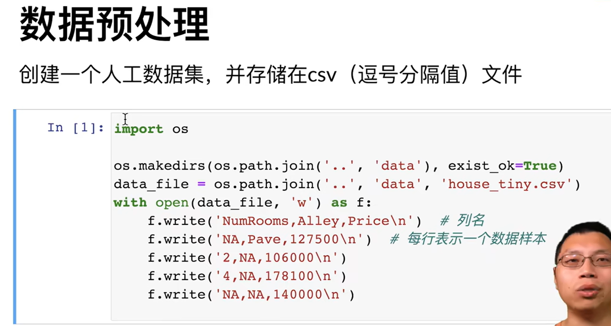
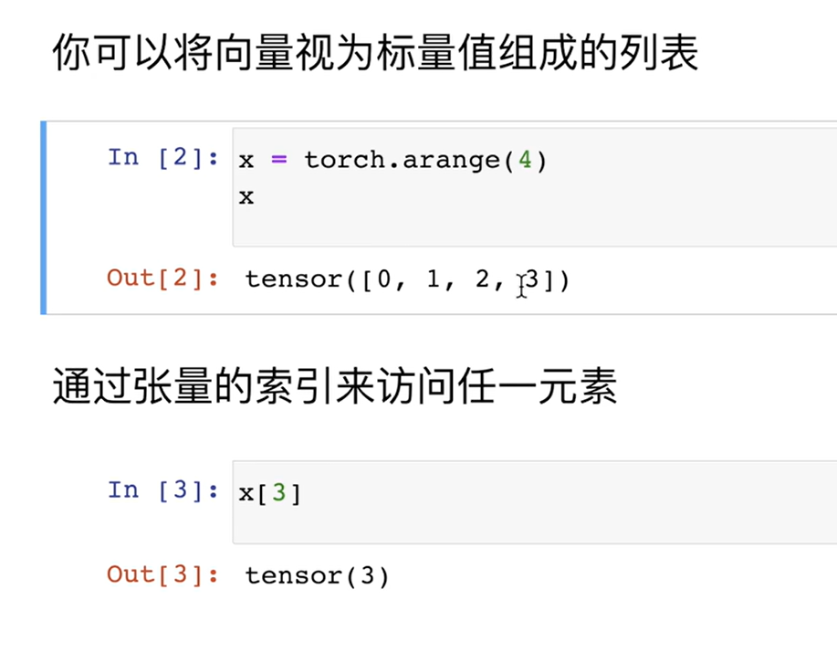
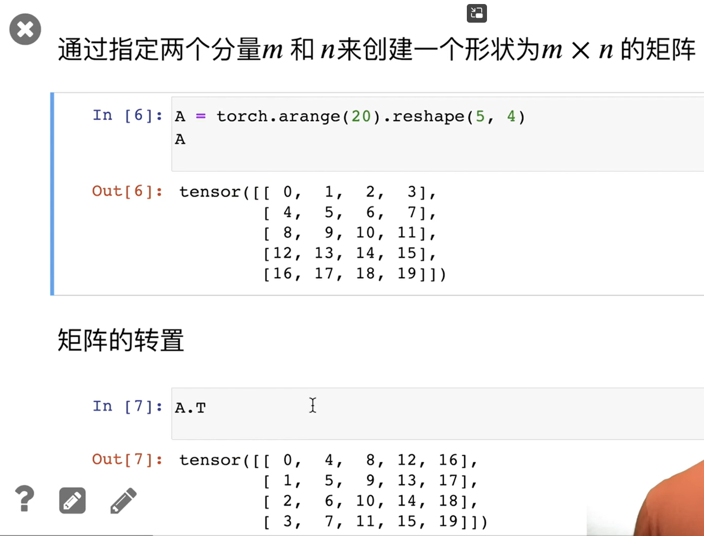
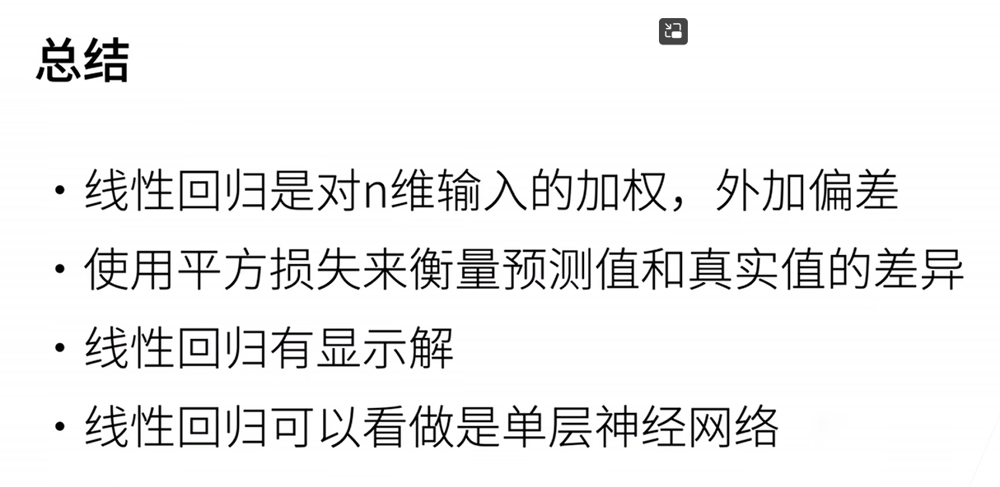
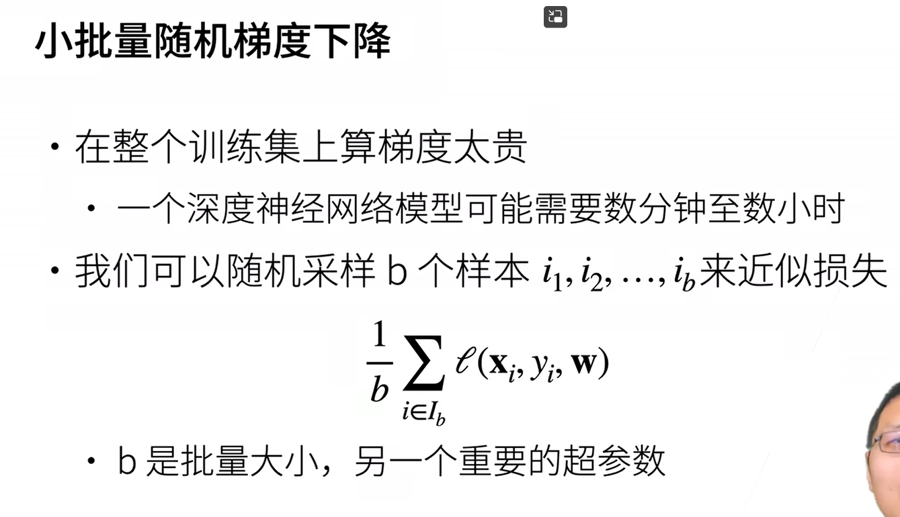
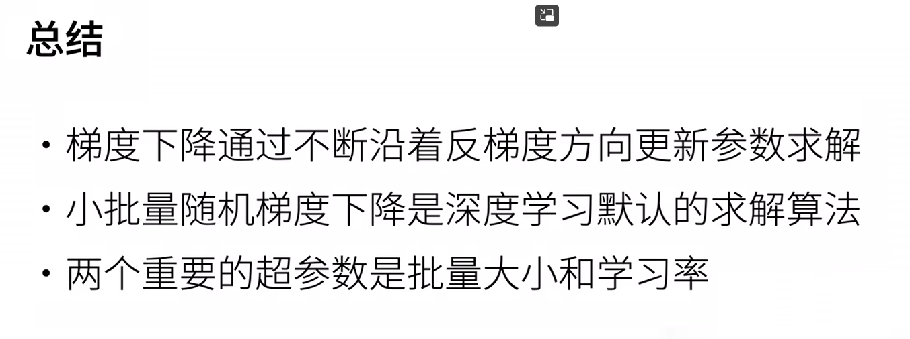

01 课程安排
02 深度学习介绍
图片分类

物体检测和分割
样式迁移
人脸合成
文字生成图片
文字生成
无人驾驶
案例 - 广告点击

03 安装
conda create -n d2l-zh -y python=3.8 pip
pip install jupyter d2l torch torchvision
预备知识
04 数据操作 + 数据预处理
数据操作
数据操作实现
jupyter notebook
两个不同 shape 的张量相加，这里的策略是复制行或列，使之成为同规格的，然后进行计算
# -*- coding: utf-8 -*-
"""ndarray.ipynb
Automatically generated by Colaboratory.
Original file is located at
https://colab.research.google.com/drive/1AMktRe_1Lf75A1rnaKBcjj9UV0iKlG2V
# 新段落
"""
import torch
x = torch.arange(12)
x
x.shape
x.numel() # 元素总数
x.reshape(3,4)
torch.zeros((3,4))
torch.tensor([[2,1,4,3],[1,2,3,4],[4,3,2,1]])
x = torch.tensor([1.0, 2, 4, 8])
y = torch.tensor([2, 2, 2, 2])
x + y, x - y, x * y,x / y, x**y # **就是幂运算
torch.exp(x) # exp是指数运算
x = torch.arange(12,dtype=torch.float32).reshape((3,4))
y = torch.tensor([[2.0,1,4,3],[1,2,3,4],[4,3,2,1]])
# 拼接 dim=0->按第一维度(行)拼接 dim=1->按第二维度(列)拼接
torch.cat((x,y),dim=0), torch.cat((x,y),dim=1)
# 通过逻辑运算符构建二元张量
x == y
# 所有元素求和
x.sum()
# 广播机制
# 复制成[[0,0],[1,1],[2,2]]
a = torch.arange(3).reshape((3,1))
# 复制成[[0,1],[0,1],[0,1]]
b = torch.arange(2).reshape((1,2))
a, b
a + b
# [-1]访问最后一个元素,[1:3]访问第2-3个元素
x[-1],x[1:3]
x[1,2]=9
x
# 赋值多个元素
x[0:2,:]=12 # 0-2行的所有列赋值为12
x
# 运行一些操作可能会导致为新结果分配内存
before = id(y) # id()类似于指针
y = y + x
# 期望改变了before的值,但是没有
id(y) == before
# 执行原地操作
z = torch.zeros_like(y)
print('id(Z):',id(z))
# 改写z的所有元素
z[:] = x + y
print('id(Z):',id(z))
# 如果后续没有再使用x,可以直接x+=y或x[:]=x+y
before = id(y) # id()类似于指针
x += y
id(y) == before
# pytorch.tensor转numpy.array
A = x.numpy()
# numpy.array转pytorch.tensor
B = torch.tensor(A)
type(A),type(B)
# 大小为1的张量转换为python标量
a = torch.tensor([3.5])
a, a.item(), float(a), int(a)
数据预处理

# -*- coding: utf-8 -*-
"""数据预处理.ipynb
Automatically generated by Colaboratory.
Original file is located at
https://colab.research.google.com/drive/1SJbSfb77Zna6F6xkCinvKztACQV6HSL5
# 数据预处理
"""
import os
os.makedirs(os.path.join('..','data'),exist_ok=True)
data_file = os.path.join('..','data','house_tiny.csv')
with open(data_file,'w') as f:
f.write('NumRcoms,Alley,Price\n') # 列名
f.write('NA,Pave,127500\n') # 每行表示一个数据样本
f.write('2,NA,106000\n')
f.write('4,NA,178100\n')
f.write('NA,NA,140000\n')
# 这条命令可以按照pandas
# !pip install pandas
import pandas as pd
data = pd.read_csv(data_file)
print(data)
# inputs->每行的1-2列 outputs->每行最后一列
# iloc就是index location
inputs,outputs = data.iloc[:,0:2],data.iloc[:,2]
# 填充inputs中的NA->其他值的平均
inputs = inputs.fillna(inputs.mean())
print(inputs)
# 将NaN视为一个类别,Pave也视为一个类别,添加Alley_Pave和Alley_NaN两个列,是Pave则Alley_Pave为1,其他同理
inputs = pd.get_dummies(inputs,dummy_na=True)
print(inputs)
import torch
x,y = torch.tensor(inputs.values),torch.tensor(outputs.values)
x,y
答疑
reshape 不是返回新数组，改变了 reshape 返回的值，也会改变其他引用
05 线性代数
线性代数
线性代数实现


# -*- coding: utf-8 -*-
"""线性代数.ipynb
Automatically generated by Colaboratory.
Original file is located at
https://colab.research.google.com/drive/1rlfAA0KZUSdVEoQH2F_omA8_Fz8QBy3g
"""
import torch
# 给单个值 -> 标量
x = torch.tensor([3.0])
y = torch.tensor([2.0])
x+y, x*y, x/y, x**y
# 可以将向量视为标量值组成的列表
x = torch.arange(4)
x
# 可以通过索引访问元素
x[3]
# reshape设置形状
A = torch.arange(20).reshape(5,4)
A
# 转置
A.T
# 对称矩阵 A = A.T
B = torch.tensor([[1,2,3],[2,0,4],[3,4,5]])
B
B == B.T
# 可以有更多维度
X = torch.arange(24).reshape(2,3,4)
X
# 相同形状的两个张量,任何按元素二元运算的结果都是相同形状的张量
A = torch.arange(20,dtype=torch.float32).reshape(5,4)
B = A.clone() # 通过分配新内存,将A的一个副本分配给B
A, A+B
# 哈达玛积(按元素乘法) ⊙
A * B
a = 2
X = torch.arange(24).reshape(2,3,4)
a+X, (a*X).shape
# 计算其元素的和
x = torch.arange(4,dtype=torch.float32)
x, x.sum()
# 表示任意形状张量的元素和
A = torch.arange(20*2).reshape(2,5,4)
A.shape, A.sum(), A
# 指定求和汇总张量的轴
A_sum_axis0 = A.sum(axis=0) # 维度0求和,剩5*4
A_sum_axis0, A_sum_axis0.shape
A_sum_axis1 = A.sum(axis=1)
A_sum_axis1, A_sum_axis1.shape
A.sum(axis=[0,1]) # 第0和1维度求和,剩4
# 均值
A = torch.arange(20,dtype=torch.float32).reshape(5,4)
A.mean(), A.sum() / A.numel()
A.mean(axis=0),A.sum(axis=0)/A.shape[0]
# 计算总和或均值时保持轴数不变
sum_A = A.sum(axis=1,keepdims=True)
sum_A
# 通过广播将A除以sum_A
A / sum_A
# 某个轴计算A元素的累积总和
A.cumsum(axis=0)
# 点积是相同位置的按元素乘积的和
y = torch.ones(4,dtype=torch.float32)
x,y,torch.dot(x,y)
# 通过按元素乘法然后进行求和来表示两个向量的点积
torch.sum(x*y)
# x的第i行转置和x做点积
# 矩阵向量积]
A.shape, x.shape, torch.mv(A,x)
# 矩阵乘法AB看作执行m次矩阵-向量积，并将结果拼接到一起，形成n*m的矩阵
B = torch.ones(4,3)
torch.mm(A,B)
# 范数，矩阵/向量的长度 = 所有元素的平方的和，然后开根号
# L2范数
u = torch.tensor([3.0,-4.0])
torch.norm(u)
# L1范数 -> 每个元素的绝对值求和
torch.abs(u).sum()
# F范数是矩阵元素的平方和的平方根
torch.norm(torch.ones((4,9)))
按特定轴求和

import torch
a = torch.ones((2,5,4))
a.shape
a.sum().shape
res = a.sum(axis=1)
res, res.shape
res = a.sum(axis=0)
res, res.shape
res = a.sum(axis=[0,2])
res, res.shape
res = a.sum(axis=1,keepdims=True)
res, res.shape
res = a.sum(axis=[0,2],keepdims=True)
res, res.shape
06 矩阵计算
深度学习的优化和计算，很多是通过求导数得来的，所以矩阵计算中的求导很重要

07 自动求导
自动求导
自动求导实现
# -*- coding: utf-8 -*-
"""自动求导.ipynb
Automatically generated by Colaboratory.
Original file is located at
https://colab.research.google.com/drive/1vn3YRHUmVqAya_HhDlx_kAvmfCG-9VBE
"""
import torch
x = torch.arange(4.0)
x
# 记录梯度
x.requires_grad_(True) # 等价于`x = torch.arange(4.0, requires_grad=True)
x.grad # 默认是None
y = 2 * torch.dot(x,x)
y
# 反向传播，计算y关于x的梯度(d(2*x^2)/dx = 4x)
y.backward()
x.grad
x.grad == 4 * x
# 默认情况下，pytorch会累积梯度，我们需要清除之前的值
x.grad.zero_()
y = x.sum()
# 此时y是向量，向量的sum的梯度是1
y.backward()
x.grad
# 对非标量调用`backward`需要传入一个`gradient`参数
x.grad.zero_()
y = x*x
# 等价于y.backward(torch.ones(len(x)))
y.sum().backward()
x.grad
x.grad.zero_()
y = x*x
# detach将该变量视为常数而非关于x的计算
u = y.detach()
z = u*x
z.sum().backward()
x.grad == u
x.grad.zero_()
y.sum().backward()
x.grad == 2*x
def f(a):
b = a * 2
while b.norm() < 1000:
b=b*2
if b.sum() > 0:
c = b
else:
c = 100*b
return c
# size=()表示是一个标量
a = torch.randn(size=(),requires_grad=True)
d = f(a)
d.backward()
a.grad == d/a
08 线性回归 + 基础优化算法
线性回归


基础优化方法


线性回归的从零实现